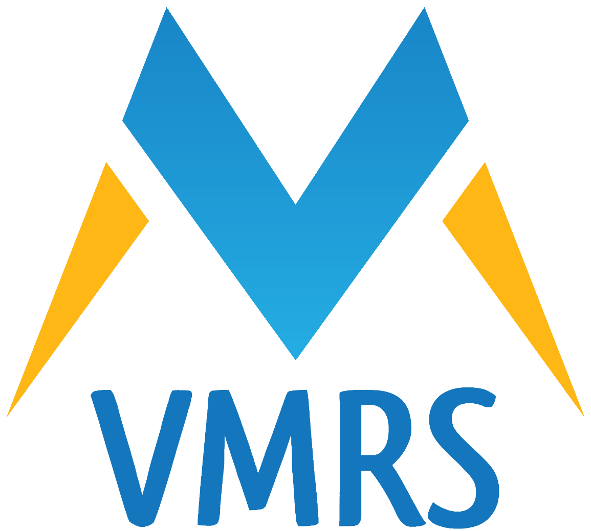

<div class="flex-container" fxLayout="row" fxLayout.xs="column" fxLayoutAlign="center none" class="fond">
  <div class="flex-item" fxFlex="30"></div>
  <div class="flex-item" fxFlex="60" fxLayout="column" fxLayoutAlign="center none">
    <div class="flex-item" fxFlex="30" class="title">Virtual Machine for Remote System</div>
    <div class="flex-item" fxFlex="60">VMRS is a service which enable you to create, manage and use Virtual Machines from everywhere.</div>
  </div>
</div>
